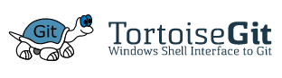
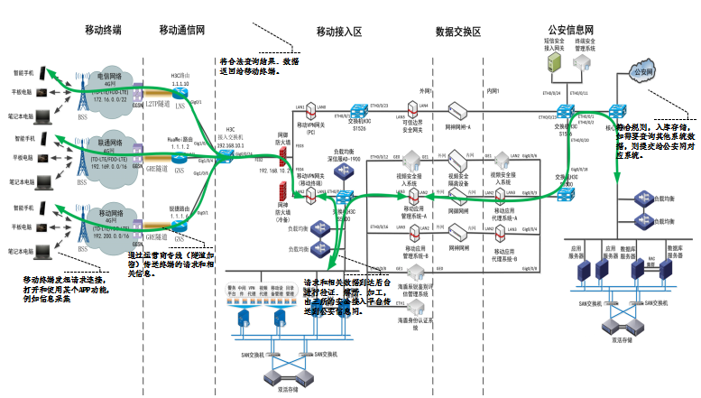

-
- Basic info. 基本信息
- 个人信息: 张子阔 / 男
- 毕业院校: 北京师范大学
- 院校性质: 985、211
- 主修专业: 计算机科学与技术
- 业余爱好: 科幻电影,推理电影,Geek盛会,球类运动
- GitHub个人仓库: https://github.com/zhangzikuo
-
- Skill. 技能清单
-
总览





-
- 1、Java基础扎实，深刻理解MVC思想
- 2、熟练使用SpringMVC、Spring、Mybatis等主流框架
- 3、熟练使用hadoop、stom、spark等大数据处理技术
- 4、熟悉关系型数据原理，熟练掌握Mysql、Oracle 等数据库
- 5、深谙常用的数据结构,如：Collection、Map等，了解其适用场景，略读过部分常用数据结构JDK源码
- 6、熟悉多线程并发下常用数据结构，对线程池框架略有研究，略读过并发包下常用的几种数据结构的JDK源码
- 7、了解锁机制及其相关数据结构(synchronized、Lock、volatile、ThreadLocal)，熟悉其适用场景
- 8、熟悉JVM相关知识：JVM类加载、JVM内存模型、Java GC机制等，并能通过工具查看JVM信息并根据信息进行代码的调优、JVM调优、及时排查与解决OOM和SOF问题
- 9、熟悉Java的IO/NIO/AIO，能在开发过程中正确使用该数据结构进行文件读写操作
- 10、熟悉RPC和Webservice技术
- 11、在设计模式原则和读过的一些JDK源码指导下，对代码有洁癖，不能忍受不遵循设计原则和MVC三层设计的代码
- 12、熟悉常用的linux的命令
- 13、时刻保持对前沿技术的热证，自学能力强
-
- Experience. 项目经验
 东软集团(北京)有限公司（2012.1 - 2013.12）
东软集团(北京)有限公司（2012.1 - 2013.12）-
石家庄市移动警务系统
移动警务系统介绍：
一期项目任务：手机端功能实现
1、移动警务统一管控客户端：主要指安装在移动终端（支持Android系统）的软件
安全模块：负责移动终端统一安全认证
应用管理模块：应用中心（应用商店）
2、移动警务应用：主要包括
警务微信、号码簿、警务资讯、警务云盘、电子邮件、移动办公、
人员核查、车辆核查、信息录入、情报指令、勤务报备、指挥调度、定位轨迹等。
二期项目任务：PC端功能实现
1、移动警务应用管理平台：
A、移动设备管理子系统（MDM）
B、移动应用管理子系统（MAM）
C、移动内容管理子系统（MCM）
D、移动用户管理子系统（MUM）
E、移动应用服务管理子系统（MASM）
F、日志审计管理子系统、报表统计管理子系统
G、开发者平台。移动警务系统网络架构拓扑图：
移动警务系统软件架构设计（内容太多，不方便展示，望见谅（^-^!））：
我主要的工作如下：
1、负责系统及相关产品需求分析及架构设计；
2、负责部门服务端的架构改进、完善，性能优化；
3、参与技术决策，技术选型、技术架构和技术风险评估；
4、主导重点项目和疑难问题的技术攻关，对系统的稳定性和性能负责；
5、对公司新入职的中、高级JAVA开发工程师进行技术指导，负责领域内新技术，新方法的调研和培训推广。
移动警务系统软涉及到的主要技术：
1、Dubbo微服务框架
2、Zookeeper服务协调
3、Redis缓存服务器
4、Solr搜索引擎
5、Nginx负载均分，动静分离
6、ActiveMQ消息队列
7、Jekins自动化构建工具
8、WebServices技术Axis2
9、Quartz定时任务
10、git分布式版本控制系统
11、mycat技术mysql中间件
- Lecture. 授课经历
 传智播客（石家庄校区）（2014.1 - 2018.3）
传智播客（石家庄校区）（2014.1 - 2018.3）-
2014.1-2014.12（共授课两期学员）
一阶段：java基础阶段内容
二阶段：java前端阶段内容
三阶段：java数据库阶段内容
四阶段：javaweb阶段内容
五阶段：java框架阶段内容
六阶段：java技术扩展，项目实战
授课阶段：一、二、三、四、五、六阶段授课，虽然比较累，但是收获了很多。
授课结果：学员就业率统计99%，学员就业平均薪资统计：9800元/月（北京），7300元/月（石家庄）2015.1-2016.12（共授课八期学员）
五阶段：java框架阶段内容
java技术扩展，项目实战
授课阶段：五、六阶段授课，专注于这两个阶段的授课。
授课结果：学员就业率统计98%，学员就业平均薪资统计：9000元/月（北京），7000元/月（石家庄）
2017.1-2018.3（共授课三期学员）
大数据课程：hadoop技术，storm技术，spark技术内容
授课阶段：大数据第四阶段，专注于大数据课程的授课。
授课结果：学员就业率统计98%，学员就业平均薪资统计：12000元/月（北京），10000元/月（石家庄）
 中公教育IT研究院（北京总部）（2018.3 - 至今）
中公教育IT研究院（北京总部）（2018.3 - 至今）-
2017.1-2018.3（共授课两期学员）
大数据课程：hadoop技术，storm技术，spark技术内容
授课阶段：大数据第四阶段，专注于大数据课程的授课。
- My Dream. 写在最后
-
我的期望
我希望在实现自身的价值的同时获得相应的利益，找到一个有潜力的事业平台。 我有热情，有想法，希望能有所做为，愿意与公司或合伙人一起承担风险，一起分享成功。个人觉得这样的生活才是最有意义的。 我不喜欢懒惰，平庸。这样会感觉生活没意义，没意思。 我会积极的去思考，去学习，尽自己所能，把自己的事情做到最好，没有疏漏。 我认为一个人，纵容自己的结果就是，最终一事无成，遗憾终生。 所以，我不喜欢放纵的人，但是适当的娱乐和休息是必要的。 只有严格要求自己，才能发挥出自己最大的价值，才能改变命运，实现生活的意义，而这个过程对于我来书是快乐的，也是享受的。 如果您能给我这个平台，万分感谢。我定不负所托。
- GitHub在线简历访问地址:中文简历
介绍： 这是个人的中文在线简历，为了实时更新个人的经历，一劳永逸，特别将此简历做成在线的。后期会在github上新开一个分支，做中英文简历。欢迎star。

张子阔的简历
zhangzikuo
-
- Contact. 联系方式
- 电话: 131-6199-6675;
- 邮箱: zhangzikuo@126.com
- 微信: 13161996675
- QQ: 2388338038
-
- Application. 应聘岗位
- 大数据讲师，java高级讲师
我是一个热爱技术，乐于分享，乐于交流技术的“技术控”。分享让快乐，交流让我睿智！
我目前正在寻找一份可以让我可以随时分享我所钟爱的技术的java相关工作。希望缘分让我们友谊的小船走向远方。